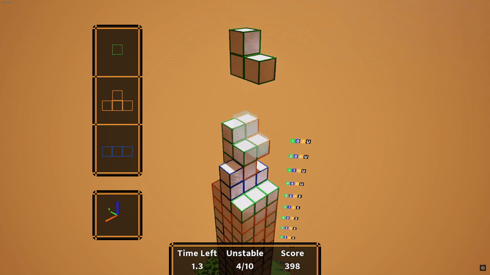
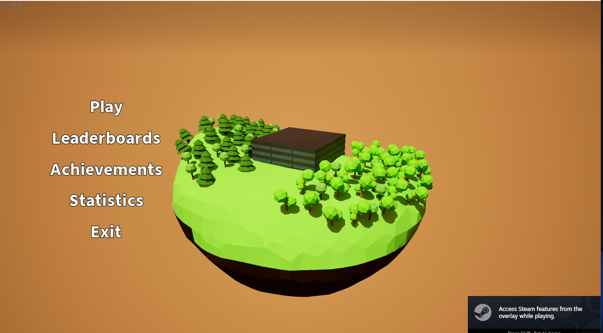
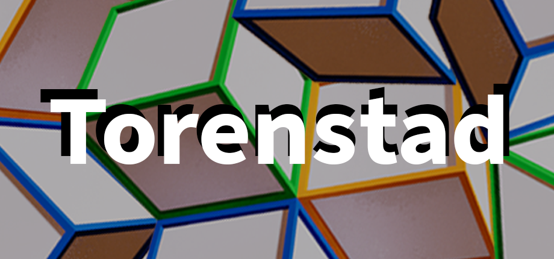
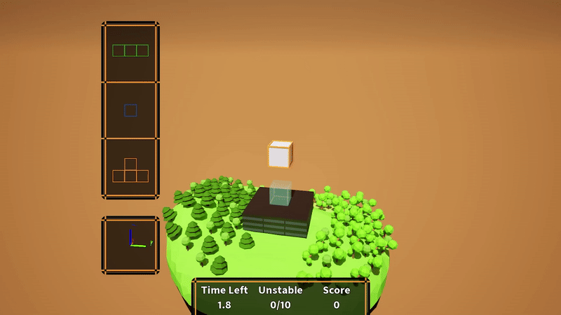

Torenstad
A game about falling blocks and tower building created in my own free time with the goal to have my own solo game on Steam in less than a semester.
The game focuses on utilization of spacial thinking when controlling the falling blocks of the tower in a 3D space.
Game Trailer
Game Genre
Casual, Simulation
Platform
PC
Engine
Unreal Engine 5
About the Development
I created 100% of the game's code and visual assets as well as coding my own Steam sdk implementation using C++.

/**
* Processing function for creating a bitmask for the level with missing blocks represented as 0
* and existing blocks represented as 1s.
*
* @param Level is the a Struct packaged TArray with tower blocks for the specific level.
* @return uint16 bitmask.
*/
uint32 UProcessingFunctionLibrary::EncodeUnstableLevel(const FLevelBlocks& Level)
{
const TArray<FVector2D> GridSlots = {
{-100, -100}, {-100, 0}, {-100, 100},
{0, -100}, {0, 0}, {0, 100},
{100, -100}, {100, 0}, {100, 100}
};
uint32 Encoded = 0;
int32 TypeBitPos = 0; // separate counter for type bits
for (int32 SlotIndex = 0; SlotIndex < GridSlots.Num(); ++SlotIndex)
{
const FVector2D& Slot = GridSlots[SlotIndex];
// Find if a block exists at this slot
const FBlockUnitData* FoundBlock = nullptr;
for (const FBlockUnitData& Block : Level.Blocks)
{
if (FMath::IsNearlyEqual(Block.BlockPosition.X, Slot.X, 1.0f) &&
FMath::IsNearlyEqual(Block.BlockPosition.Y, Slot.Y, 1.0f))
{
FoundBlock = &Block;
break;
}
}
if (FoundBlock)
{
// Set bit in mask (bit 0–8)
Encoded |= (1 << SlotIndex);
// Store block type sequentially (2 bits per existing block)
uint32 TypeBits = static_cast<uint32>(FoundBlock->BlockType) & 0x3;
Encoded |= (TypeBits << (9 + TypeBitPos));
TypeBitPos += 2; // increment only for existing blocks
}
}
return Encoded;
}
}
Encoding Levels
For the game to save the tower data in Steam Leaderboards it needed to be compressed, for that I encoded the unstable level(s) values in bits based on their type (3 types meaning 1 block fits inside 2 bits) saving limited space in Leaderboard details upload.
Leaderboards on Steam can have 64 32-bit integers so I used couple of them to store the tower high as well as the 10 possible unstable levels to later load them in the game without using any of the saving functionality locally.

Steam Leaderboards Download
Using the Steam SDK I downloaded the entries from Steam servers and made sure that the network ID for the player was parsed based on the structure that the AdvancedSessionPlugin was using to create compatability between the implementations.
This allowed me to use the functions provided by the plugin from my own implementation of the leaderboard entries processing, allowing me to display icons of player as well as other data.

void USteamDownloadLeaderboardAsync::OnDownloadLeaderboard(LeaderboardScoresDownloaded_t* pCallback, bool bIOFailure)
{
if (bIOFailure || !pCallback->m_hSteamLeaderboardEntries)
{
UE_LOG(LogTemp, Error, TEXT("Steam Leaderboards: Failed to download leaderboard"));
OnFailure.Broadcast(false, LeaderboardEntries);
return;
}
// Get subsystem (for Steam ID creation)
IOnlineSubsystem* OnlineSub = Online::GetSubsystem(GetWorld(), STEAM_SUBSYSTEM);
const IOnlineIdentityPtr IdentityInterface = OnlineSub->GetIdentityInterface();
// Quick check if user is still there
if (!SteamUserStats())
{
UE_LOG(LogTemp, Error, TEXT("Steam Leaderboards: SteamUserStats is null"));
OnFailure.Broadcast(false, LeaderboardEntries);
return;
}
// For each entry, iterate over teh entries and create structs with their data
for (int i=0; i < pCallback->m_cEntryCount; i++)
{
LeaderboardEntry_t entry;
int32 details[22];
SteamUserStats()->GetDownloadedLeaderboardEntry(pCallback->m_hSteamLeaderboardEntries, i, &entry, details, 22);
TArray<int32> DetailsArray;
DetailsArray.Append(details);
// Convoluted way to cast the SteamID to what Advanced Friends API can use
FBPUniqueNetId OutNetId;
if (IdentityInterface.IsValid())
{
const FString SteamIDStr = FString::Printf(TEXT("%llu"), entry.m_steamIDUser.ConvertToUint64());
if (TSharedPtr<const FUniqueNetId> UniqueNetId = IdentityInterface->CreateUniquePlayerId(SteamIDStr); UniqueNetId.IsValid())
{
OutNetId.SetUniqueNetId(UniqueNetId);
}
}
LeaderboardEntries.Add(FLeaderboardEntryData(OutNetId, entry.m_nGlobalRank, entry.m_nScore, entry.m_cDetails, DetailsArray));
}
UE_LOG(LogTemp, Log, TEXT("Steam Leaderboards: Downloaded leaderboard successfully"));
// Ensure it is on the Game thread because accessing LeaderboardEntries in UI will break Unreal
AsyncTask(ENamedThreads::GameThread, [this]()
{
OnSuccess.Broadcast(true, LeaderboardEntries);
});
}
Extras

Early development prototype.
Game Screenshots



